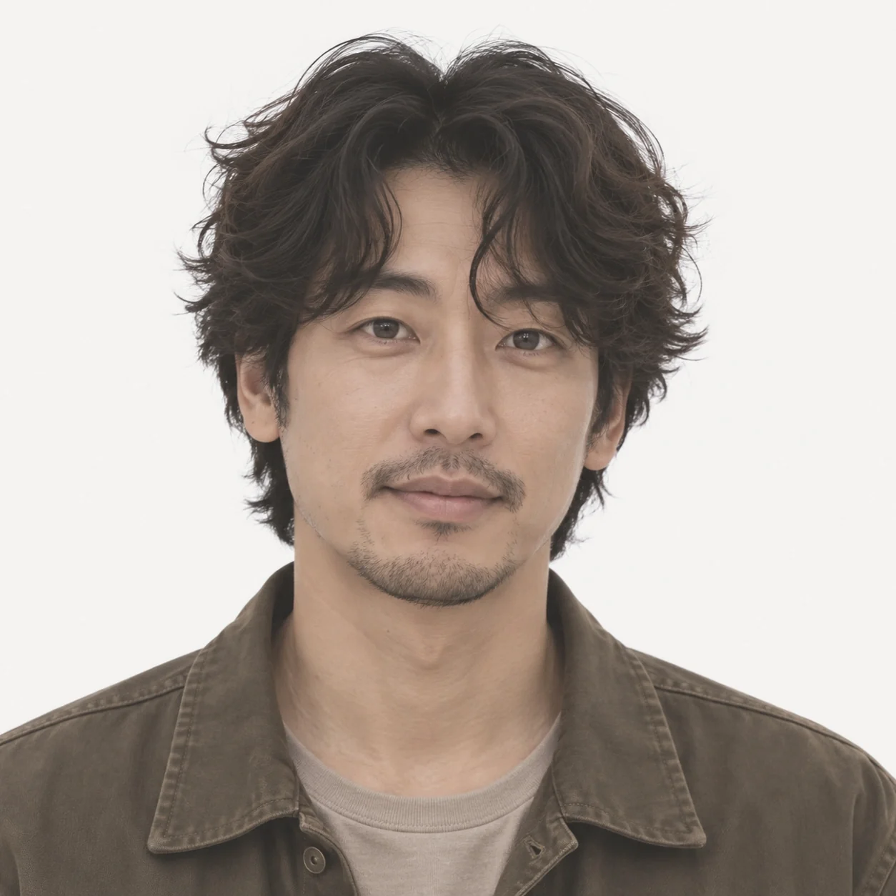
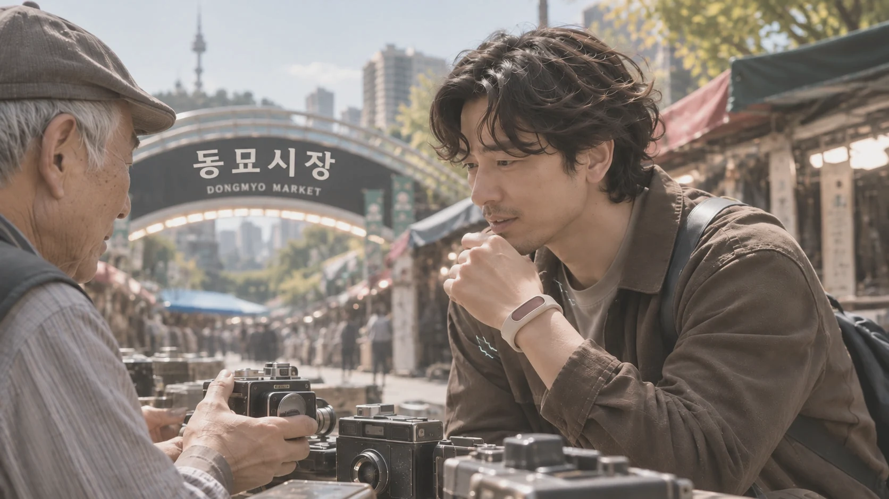
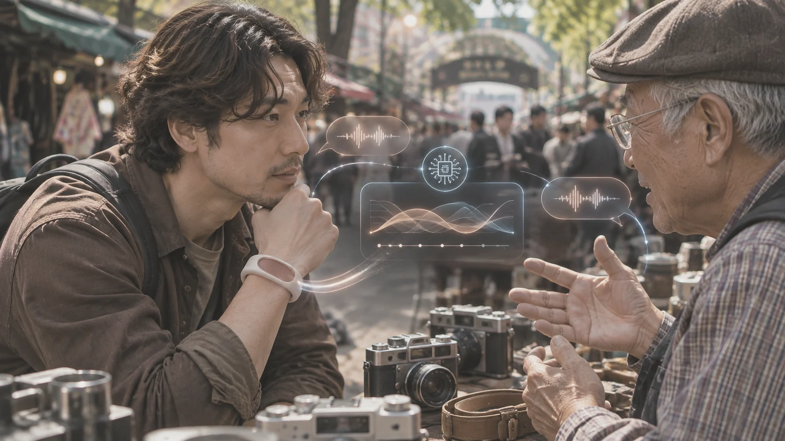
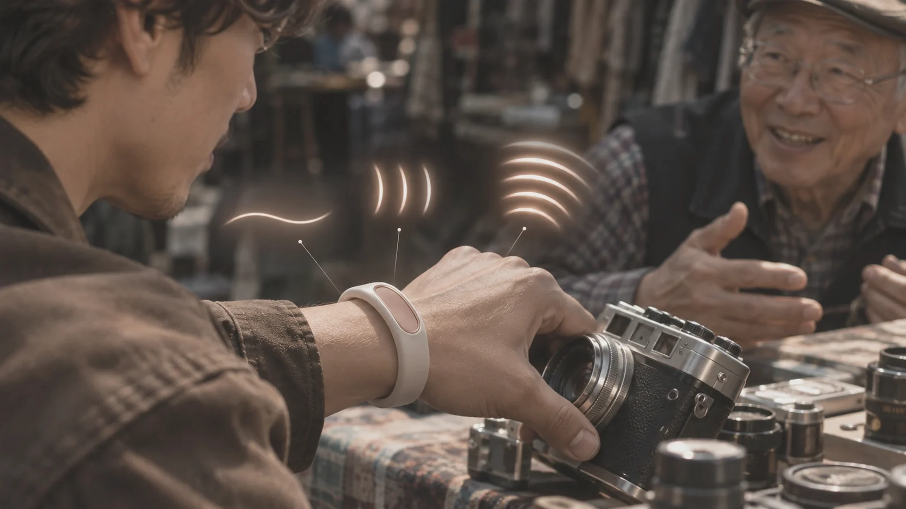
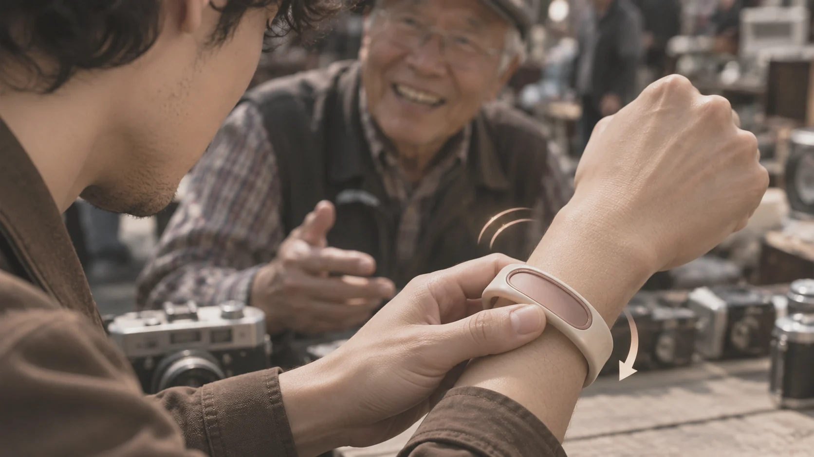

Product 2 · 01 / Product Introduction
TALKTIDE
흥정의 흐름을 손목으로 읽다
상대의 말투와 대화의 흐름을 분석해, 흥정의 순간을 손목의 촉각으로 전달하는 AI 웨어러블 팔찌
EXPLORE MORE ↗
한도윤41세 · 빈티지 리셀러
오전에는 구매자로 발품을 팔고, 오후에는 좌판을 여는 판매자입니다.
Chapter 01말 사이의 침묵
- 01 / 05
“지금 더 깎아도 되나…?
표정만으론 모르겠어.”상인의 반응을 정확히 읽기 어려워 타이밍을 놓친다.
- 02 / 05
“‘안 돼요’가 진짜 안 된다는 건가,
한 번 더 해보라는 건가?”짧은 대화만으로는 상대의 의도를 판단하기 어렵다.
- 03 / 05
“지난번엔 통했는데…
오늘은 왜 안 되지?”경험과 감에 의존해 협상 결과가 일정하지 않다.
- 04 / 05
“아침엔 깎는 쪽, 오후엔 버티는 쪽…
오늘은 어느 쪽으로 말해야 하지?”구매자와 판매자의 입장을 오가며 상황에 맞는 흥정 전략을 판단하기 어렵다.
- 05 / 05
“말에 집중하다 보니,
사장님 말투가 바뀐 걸 또 놓쳤어.”대화에 집중하면서 상대의 말투와 반응 변화를 동시에 파악하기 어렵다.
TALKTIDE는 이 순간들을 손목의 진동으로 알려 줍니다.
Chapter 02흐름을 읽다
말의 결을 읽고,
손목의 신호로 바꿉니다
01 Input · 듣는다
대화 분석을 통한 실시간 상황 인식
상인의 말투·억양·속도·침묵을 수집해 협상의 흐름을 파악합니다.
02 AI Process · 읽는다
상황에 따른 3단계 진동 신호
대화의 흐름을 망설임, 긍정, 결심 임박의 세 가지 상태로 해석합니다.
03 Output · 알린다
팔찌를 내려 현재 분석 결과 확인
반대 손으로 팔찌를 가볍게 끌어내리면 지금 상황을 진동으로 알려 줍니다.
Chapter 03Feel the Tide
화면 대신, 다섯 가지 진동의 언어
신호를 눌러 길이와 리듬을 느껴 보세요. 진동을 지원하는 휴대폰 브라우저에서는 실제로 진동합니다.
Signal
신호를 선택하세요
아래 다섯 개의 신호 중 하나를 눌러 보세요.
진동 패턴은 화면의 파형으로 보여 드립니다. 진동을 지원하는 휴대폰 브라우저에서는 실제 진동도 함께 재생됩니다.
3D 제품으로 직접 느껴 보기 ↓



Chapter 04한 번의 흥정
Scene 01 · 흥정 시작
“이 카메라, 얼마까지 돼요?”
상인과 대화를 나누며 제품의 가격과 상태를 흥정합니다.
Scene 02 · 분석 시작
패드를 1초간 누르면,
조용히 듣기 시작합니다
손목의 패드를 1초간 눌러 대화 분석을 시작합니다. 짧고 약한 진동 2회로 시작을 알려 줍니다.
Scene 03 · 망설임 감지 → 제안 변경
길고 낮은 진동,
지금은 한 발 물러설 때
상대가 망설이면 길고 낮은 진동이 옵니다. 이 신호를 보고 제안을 바꾸면 짧은 3회의 긍정 신호가 이어집니다.
Scene 04 · 결심 임박 → 합의·종료
강한 다섯 번,
결정의 순간이 가까워졌습니다
강한 5회 진동은 상대의 결심이 가까워졌다는 신호입니다. 적절한 시점에 가격을 정하면 거래가 마무리되고, 길게 약해지는 진동으로 분석이 끝납니다.
- 01 흥정 시작대화 중 · 신호 없음
- 02 분석 시작
- 03 망설임 → 긍정
- 04 결심 임박 → 종료
AI는 판단을 대신하지 않습니다.
진동은 참고일 뿐, 가격을 정하는 것은 언제나 사용자입니다.
Chapter 05Object
일상 액세서리처럼, 손목 위에 조용히
오픈 커프 형태의 무광 바디와 소프트 터치 패드. 직접 돌려 보고, 분홍색 패드를 눌러 체험해 보세요.
전원 꺼짐
Chapter 06Material
손이 먼저 알아보는 소재
Body
무광 PC/ABS
빛을 흩어 반사를 줄인 매트 표면. 시장의 햇빛 아래에서도 튀지 않는 일상의 질감입니다.
Pad
소프트 터치 패드
손끝이 닿는 유일한 지점. 체온에 가까운 부드러운 촉감과 Dusty Pink 컬러로 위치를 알려 줍니다.
Finish
새틴 마감
곡면을 따라 은은하게 흐르는 광택. 금속성 대신 도자기처럼 차분한 표정을 만듭니다.
CMF Palette · 70 / 20 / 10
Warm Ivory 70% · Muted Sage 20% · Dusty Pink 10%
- Dimensions
- 손목 착용형 오픈 C자 구조 · 내경·폭·두께·무게는 확정 전
- Material
- 무광 PC/ABS 바디 · 소프트 터치 패드 · 새틴 마감
- Color / CMF
- Warm Ivory #E5DED2 · 바디Dusty Pink #B98F83 · 패드
- Technology
- 대화 분석 AI · 진동 피드백 · 물리적 터치 인터랙션
Product 2
TALKTIDE
MoreTeam 06